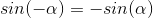
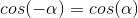
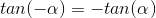

Even Odd Identities
The Even Odd Identities also known as the negative angle identities allow us to explore the possibilities of negative angles and functions.
sin
cos
tan
While it may be initially confusing that cos can just equal itself looking at its graph explains it.

Here we can see that at every angle on either side of the graph cos has the same value.
What would the reciprocals csc, sec, and cot look like as an even odd identitiy? Solution here.